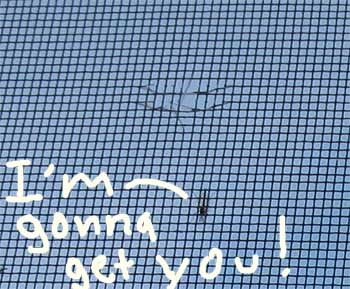
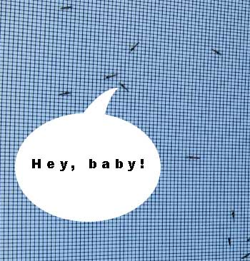
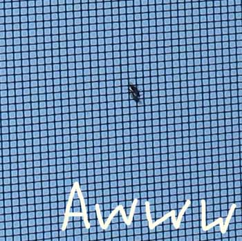
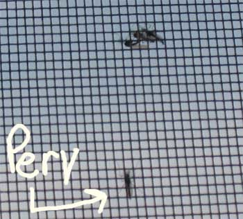
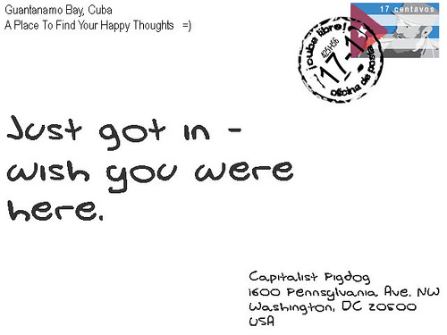

"Brennan's body changed blood group from O negative to O positive when she became ill while on drugs to avoid rejection of the organ by her body's immune system. Her new liver's blood stem cells then invaded her body's bone marrow to take over her entire immune system, meaning the teen no longer needs anti-rejection drugs."
---- Australian girl changes blood group, immune system
❄
"A Spanish driver who collided with a cyclist is suing the dead youth's family for $29,300 for the damage the impact of his body did to his luxury car. The youth's family won 33,000 euros compensation from Delgado's insurance company after the firm acknowledged he had been driving at excessive speed and this could have contributed to the incident, El Pais reported. "I'm also a victim in all of this, you can't fix the lad's problems, but you can fix mine," Delgado told the newspaper, ahead of a January 30 legal decision on his suit."
---- Spanish driver sues dead crash cyclist for damage
❄
"People with blue eyes have a single, common ancestor, according to new research. A genetic mutation affecting the OCA2 gene in our chromosomes resulted in the creation of a 'switch,' which literally 'turned off' the ability to produce brown eyes, Eiberg said."
---- Genetic mutation makes those brown eyes blue
❄
"People with blue eyes have a single, common ancestor, according to new research. A genetic mutation affecting the OCA2 gene in our chromosomes resulted in the creation of a 'switch,' which literally 'turned off' the ability to produce brown eyes, Eiberg said."
---- Genetic mutation makes those brown eyes blue
❄
The Coolidge Effect is a phenomenon whereby males exhibit high sexual performance given the introduction of new willing females.
It earned its name many years ago when President Coolidge and his wife were touring a farm. While the President was elsewhere, the farmer proudly showed Mrs. Coolidge a rooster that "could copulate with hens all day long, day after day." Mrs. Coolidge coyly suggested that the farmer tell that to Mr. Coolidge, which he did.
The President thought for a moment and then inquired, "With the same hen?"
"No, sir," replied the farmer.
"Tell that to Mrs. Coolidge," retorted the President.
---- The Coolidge Effect
❄
"Me + You = Great Hair"
---- Pert Plus, Happy Medium, 2-in-1 Shampoo Plus Conditioner
❄
"Contrary to our previous beliefs, identical twins are not genetically identical. This finding is presented by American, Swedish, and Dutch scientists in a study being published today in the journal American Journal of Human Genetics. The finding may be of great significance for research on hereditary diseases and for the development of new diagnostic methods."
---- Identical twins not as identical as believed
❄
And in that moment my right arm went totally paralyzed by my side. And I realized, "Oh my gosh! I'm having a stroke! I'm having a stroke!" And the next thing my brain says to me is, "Wow! This is so cool. This is so cool. How many brain scientists have the opportunity to study their own brain from the inside out?"
❄
"If you're willing to risk your freedom for a few dollars, then I guess you must really need the money. I mean, all I wanted to do was get dinner and if you really want to join me ... hey, you're more than welcome."
---- Julio Diaz, speaking with the teenager who robbed him
❄
"They like toys more that are associated with someone who has spoken their language. They prefer to eat foods offered to them by a native speaker compared to a speaker of a foreign language. And older children say that they want to be friends with someone who speaks in their native accent.' Accents and vernacular, far more than race, seem to influence the people we like. 'Children would rather be friends with someone who is from a different race and speaks with a native accent versus somebody who is their own race but speaks with a foreign accent."
---- Harvard's baby brain research lab
❄
Well, I am here to advocate for unfairness. I've got a 10-year-old at home. She's always saying, 'That's not fair.' When she says this, I say, 'Honey, you're cute. That's not fair. Your family is pretty well off. That's not fair. You were born in America. That's not fair. Darling, you had better pray to God that things don't start getting fair for you.'
---- Fairness, idealism and other atrocities
❄
I noticed a worrying thing today while looking out my windows.
Lots o’ mosquitoes.
I was alarmed because I thought they were trying to muscle through the screen to get at me.

Then I noticed a mosquito putting the moves on another mosquito.

And I realized these mosquitoes were lovers, not fighters.

Until I saw something to make even a catholic priest blush.

And then I saw what I thought was the ultimate perv just kicking back and checking things out.

Until I realized that not only was I looking, too, but I was taking pictures and posting them online.
❄
By the seventh day God completed His work which He had done, and He rested on the seventh day from all His work which He had done.
- Genesis 2:2 (New American Standard Bible)
On the one hand: how can you have an all-powerful being who needs to take a break after a mere 6 days of work.
On the other hand: I’m down with a god who - after working a mere 6 days - decides to kick up its feet and take it easy.
❄
New Coverletter
Innovative (but not too creative) and forward-thinking (but definitely hind-sighted) designer/developer/tester/tech support/dba/network engineer with a solid (but moldable) background (without forgetting the foreground) in conceptualization, creative design, planning and production of successful web sites, applications and enterprise resource models. Skilled strategic planner, business manager, marketing expert who can expedite e-business deliverables, mission-critical schemas and synergize robust paradigms. Possesses the self-motivation (but not ambitious enough to want your job) and intellect (but not too smart) necessary to excel in a dynamic (yet stable) and artistic (but not fartistic) environment. A multi-talented artist (but not a hippie) with roots in traditional print media (and tentacles in new media) and firm (again, moldable) belief (while maintaining skepticism) in staying (or leaving) in the forefront (while remembering the background) of design innovations and technology while maintaining the latest (and greatest) in technical standards (of which you're the gold) and accessibility requirements.
❄

❄
I have one of two choices "stay in the post office and go crazy ... or stay out here and play at writer and starve. I have decided to starve.
---- Charles Bukowski
❄
Adults are just obsolete children and the hell with them.
---- Theodor Seuss Geisel, On writing for adults, as quoted in Of Sneetches and Whos and the Good Dr. Seuss : Essays on the Writings and Life of Theodor Geisel, (1997) by Thomas Fensch, p. 96
❄
Karl von Frisch studied the senses of bees, identified their mechanisms of communication and showed their sensitivity to ultraviolet and polarized light. In the center of his work were the study of the sensory perceptions of the honey bee and was one of the first who translated the meaning of the waggle dance. The theory was disputed by other scientists and greeted with skepticism at the time. Only recently was it definitively proved to be an accurate theoretical analysis.
In 1973 he was awarded Nobel Prize in physiology and medicine for his achievements in comparative behavioral physiology and pioneering work in communication between insects.
---- Karl von Frisch, Bee Dance Guy
❄
The weak spot is hidden in the HIV envelope protein gp120. This protein is essential for HIV attachment to host cells, which initiate infection and eventually lead to Acquired Immunodeficiency Syndrome or AIDS. Normally the body's immune defenses can ward off viruses by making proteins called antibodies that bind the virus. However, HIV is a constantly changing and mutating virus, and the antibodies produced after infection do not control disease progression to AIDS. For the same reason, no HIV preventative vaccine that stimulates production of protective antibodies is available.
The Achilles heel, a tiny stretch of amino acids numbered 421-433 on gp120, is now under study as a target for therapeutic intervention. Sudhir Paul, Ph.D., pathology professor in the UT Medical School, said, Unlike the changeable regions of its envelope, HIV needs at least one region that must remain constant to attach to cells. If this region changes, HIV cannot infect cells. Equally important, HIV does not want this constant region to provoke the body's defense system. So, HIV uses the same constant cellular attachment site to silence B lymphocytes - the antibody producing cells. The result is that the body is fooled into making abundant antibodies to the changeable regions of HIV but not to its cellular attachment site. Immunologists call such regions superantigens. HIV's cleverness is unmatched. No other virus uses this trick to evade the body's defenses.
-- Pathologists Believe They Have Pinpointed Achilles Heel Of HIV, ScienceDaily
❄
❄
“I’m sick of following my dreams, man. I’m just going to ask where they’re going and hook up with them later.”
❄
❄
Jury Nullification - the process whereby a jury in a criminal case nullifies a law by acquitting a defendant regardless of the weight of evidence against him or her.
"The jury has the right to judge both the law as well as the fact in controversy."
- John Jay, first Chief Justice of the United States
❄
❄
❄
Many of you keen youth and the otherwise unemployed have heard that you should send out resumes to as many potential employers as possible. The goal being to 1) find jobs you like and 2) make sure you apply. Get your foot in the door so to speak. After all, getting a job is like winning the lottery - you can't win if you don't play!
Balderdash!
The odds of you getting any individual job you apply for are very remote. With this economy there are hundreds of other job applicants for that one job. Hundreds! At least! Chances are that one of them is smarter, better educated, more experienced, fairer looking and/or willing to have sex with the HR person and the new boss.
Heck, even getting that chance for a nooner assumes that the HR person actually saw your resume to call you in for it in the first place. Not likely! The poor, underemployed, underpaid, undersexed and overworked HR person must scan hundreds of resumes for dozens of open positions. They must send scores of emails, make numerous calls and interview countless potential employees each day. The chance of your resume being seen by the HR person in this environment is only slightly better than that of Paris Hilton winning this year's Nobel Prize for Physics. The chance of them seeing your resume and not using it to wipe up coffee, play wastepaper-basket basketball, make a grocery list, or write down the private cell phone number of the rather good-looking chap with the nice ass they just interviewed is even worse.
Experts say it takes at least 16 weeks for the average person to find a job, and lets face it, if you haven't had a job before (keen youth) or somehow lost your job (otherwise unemployed) you are not the average person. You are below average. Sub par. The bottom of the barrel. It'll probably take you at least twice that long - 32 weeks! (you're welcome for doing the math) to find that new job.
That's 8 months. 8 months people! During that 8 months of not getting a job - that 8 months of having your resume lost and misfiled and used to sop up coffee spills, that 8 months of anxiety and worry and biting of the nails and hand wringing, that 8 months of not hearing back from even those jobs you applied for only as backups and were sure to get a call from but didn't wouldn't it be better to do without all the stress and depression and feelings of self-loathing? Who needs it? Not you, that's who!
The reality is your chances of getting a job actually decrease when you apply for a job. You're already unemployed. You already have all the stress and anxiety of not having a job. Not knowing if you'll hear from a potential employer after sending out a resume only increases those feelings of anxiety, and with increased feelings of anxiety come decreased job-search performance and with decreased job-search performance comes a decreased chance of landing a job.
So my advice to you, keen youth and the otherwise unemployed, is to relax - go out and work on your tan, play Frisbee or read a book. By no means, however, should you look for a job. Looking for a job will only hurt your chances of getting a job.
❄
“I'm happy to say I think FSM hurts the evolutionists' program since, by mocking the Christian tradition - it reinforces the correct impression that there is genuine contempt for biblical faith in that camp. Besides, the parody is lame, and there are few things more encouraging than cheap shots from one's opponents.”
——- Mark Coppenger, teacher at Southern Baptist Theological Seminary and pastor, from USA Today
“I'm sorry if Christians find the belief that the Flying Spaghetti Monster created the universe lame, but correct me if I'm wrong- Christians believe that a cosmic Jewish zombie can make you live forever if you symbolically eat his flesh and telepathically tell him that you accept him as your master, so he can remove an evil force from your soul that is present in humanity because a rib-woman was convinced by a talking snake to eat an apple of discernment from a magical tree. And they think the idea that a decrease in pirates caused global warming is ridiculous?”
——- response from Bobby Henderson, founder Church of the Flying Spaghetti Monster
* slight correction, Roman Catholics believe in transubstantiation - the physical change of bread and wine into the actual body and blood of Jesus - aka cannibalism.
❄
❄
❄
When I was a young lad of 8 my parents inquired if I wanted to go to an Arts and Crafts Fair.
"A fair?" I asked, unable to contain my glee, because at 8 one is allowed to have glee as opposed to high school aged kids who with their glee clubs have, over the past 50 years, been supplying jocks and stoners with valuable wedgie-rific opportunities, Hanes and Fruit of the Loom with skyrocketing stock values and myself with occasions for amazingly long run-on sentences.
"A fair," they said, smiling down at me before smiling at each other.
Perhaps they even ruffled my hair.
I should mention that the smile they smiled to each other after smiling their smile at me was one of those smiles. Until the age 7 or so I went happily through life believing everything my parents said to me but then the rumor starting getting around that Santa Claus might not be the real deal, and, well, once the big guy goes down the Easter Bunny, the Tooth Fairy and the concept of an equitable bicameral legislature doesn't stand a chance. So while of course I loved my parents and of course I trusted my parents that last little smile they gave each other left a small but very dark storm cloud in the otherwise blue skied, fresh aired, green meadowed biome of my soul.
But we were going to a fair! Fairs had Tilt-a-Whirls and bumper cars and The Hammer! Fairs had video games and skee ball and guns to shoot at targets! Fairs had popcorn and cotton candy and weird, edible things on sticks! And, if you were really lucky, mom and dad would buy the tickets for the food first so you could eat before you went on the rides.
This allowed for colorful fun for all fairgoers.
Not to mention great stories to tell your friends the next day. Let me tell you, from personal experience, there is little quite so satisfying to an 8-year-old than getting on The Hammer after eating 3 corn dogs and a Pepsi, getting off and then seeing the principal of your school (remember folks, in this use principal ends in "pal" - not "ple" - because the principal is your pal!) in line for the same ride - bonus points of they are with their significant other and/or are sporting a new pair of shoes.
The next morning we drove to the high school ("That's where the fair is, dear," my mother had assured me.) and I saw the sign: Jaycees Arts and Crafts Fair and Lion's Club Pancake Breakfast. I was in heaven. A fair and a pancake breakfast! They hadn't even told me about the Pancake Breakfast! Sure, I'd eaten pancakes for breakfast before, but with those capital letters Pancake Breakfast it seemed important somehow. Oh joy! Oh day of days!
But as we got to the front doors of the high school that dark storm cloud in my little 8-year-old brain was starting to cause some turbulence: Why were we walking into the high school? How can a fair be inside a high school? Where were all the rides and the sounds and the smells of the fair?
So yeah, we got in there and all I saw was yarn and beads. Oh sure, the crocheting needles looked like they might be fun for a bit - great drum sticks - and some of the sewing needles were alluringly long and spiky looking but it was mostly just yarn and beads.
Later that same year my parents asked me if I wanted to go to a Math Jamboree. They almost had me with "jamboree" - I'd never heard of one of those before and it sure sounded like fun - but I was on to them. I was an older and smarter 8-year-old, a wiser and more cautious 8-year-old, an 8-year-old who could still love and laugh and play but an 8-year-old who was slowly beginning the long, inevitable spiral into cynicism and skepticism. I didn't fall for it this time.
Math Jamboree, indeed.
❄
“In our issue of July 4, 2005, Weekly World News reported that Bigfoots are being bred by the U.S. government in a secret location somewhere in Alabama. But we have just learned that the secret breeding facility was moved four months ago to a portion of the Air Force’s Area 51 in New Mexico. We regret the error.”
—— Correction from the July 18, 2005 edition of the Weekly World News
❄
“I think I should have used more foresight about arranging my departure.”
—— From the found diary of Carl McCunn
❄
Jesus is a Commenter - I cleaned my basement today so, naturally, I thought about Jesus. You read about the guy, and it seems like all he ever did was mingle with the assholes of his time. The weird, outcast, ill-spoken and socially awkward. Hookers and lepers.
❄
Space isn't remote at all. It's only an hour's drive away if your car could go straight upwards.
❄
“And to Siouxland (Sioux City, Iowa) residents, many of whom consider themselves connoisseurs of fine food, a city is not a city without an Olive Garden. So as of Monday, Sioux City becomes a real city.”
❄
Roughly 2.5 miles beneath the ice of Russia’s Vostok Station in Antarctica. Fresh water. Similar in surface area to Lake Ontario. 3 times the volume. Depth ranges from 650 ft to 2600 ft deep. Average water temperature is -3 C (not frozen because of the pressure of ice above and geothermal heat from below). Oxygen levels 50 times higher than those typically found in ordinary freshwater lakes on Earth (under extreme pressures oxygen will more readily dissolve in water). Life?
—— Lake Vostok
❄
The stones slowly move across the surface of the playa, leaving a track as they go, without human or animal intervention. They have never been seen or filmed in motion and are not unique to The Racetrack.
—— The Sailing Stones of Racetrack Playa, Death Valley
❄
An argument for taxes.
“Once a tax goes up, it never drops.”
The highest federal tax bracket was above 70% in the 1970s and now sits at 39% in 2007.
“The ’70s were rife with inflation and a weak economy because of the high taxes.”
From 1942 through 1963, the top federal bracket ranged from 88% to 94% - a period of rapid economic expansion.
“In order to stimulate the economy, you have to lower taxes.”
In 1921, the top federal tax rate was 73%, dropping to 24% by 1929 - the roaring ’20s - in 1929, in which we had the lowest top bracket tax rate in the past 80 years, we also saw the beginning of the Great Depression.
—— Steve Paske, a Milwaukee Public Schools teacher and author of a new book, Breaking Stride.
❄
An argument against taxes.
“Withholding payment of taxes is one of the quickest methods of overthrowing a government.”
❄
And so my answer was, yes, I know that drugs are terrible. I’m not saying that drugs should be decriminalised because it would be fun if we could all get stoned with impunity. I’m saying that we’ve tried minimising harm through a draconian legal policy. It is now clear that enforcement and supply-side interventions are largely pointless. They haven’t worked.â€
- Julian Critchley: All the experts admit that we should legalise drugs
❄
The Cyrus Cylinder is regarded as the first human right charter in history “predating the Magna Carta by more than one millennium”. There were three main premises in the decrees of the Cyrus Cylinder: the political formulization of racial, linguistic, and religious equality, slaves and all deported peoples were to be allowed to return to home; and all destroyed temples were to be restored.
❄
Nine beers in one night could put even a seasoned drinker under the table. But the pen-tailed tree shrew in Malaysia consumes the equivalent of that in alcoholic nectar several nights a week, researchers have discovered, and six other species of animals there consume smaller amounts of alcohol as well. Unlike humans, the animals seem to suffer no ill effects from their habit. How they have evolved to tolerate alcohol could teach us something about the origins of human alcohol consumption and abuse, researchers say.
❄
Those Who Believe in Telekinetics, Raise My Hand
❄
Pope: Accept death 'at the hour chosen by God'
People must accept death at the hour chosen by God, Pope Benedict XVI told ailing pilgrims Monday in an anti-euthanasia message at Lourdes, the shrine that draws the desperate, sick and dying.
After hearing the pope's message during the mass, nearly half the people in attendance did a double take while some infirm faithful in the back lying on gurneys and hooked up to IVs managed to prop themselves up just long enough to give the pope the finger before collapsing in pain and exhaustion.
While several European countries permit euthanasia, the Vatican vehemently maintains that life must continue to its natural end. The pope said in his homily that the ill should pray to find the grace to accept, without fear or bitterness, to leave this world at the hour chosen by God.
"Other things," Pope Benedict XVI continued, "that the ill should pray to accept without fear or bitterness include hospital food (especially tapioca pudding), the moratorium on potentially lifesaving stem cell research in the U.S., sponge baths as the devil's work and lack of cable television in their semi-private rooms.
The Mass closed the pope's four-day trip to France, his first to the country since becoming pontiff in 2005. Benedict used the trip to lay out the church's opposition to rampant materialism in modern life and recognition of divorced Catholics' new marriages.
The pope then got into his $100,000 VW Phateon, stroked the gold cross he wears around his neck and then fiddled with his gold pescatorio ring before adding, "Well, we'll recognize the new weddings only if 1) they were in an abusive relationship, 2) they didn't consummate the marriage, 3) they really really didn't mean it the first time around, or, 4) they had their fingers crossed."
When one young man in a wheelchair near the back suggested that perhaps God's "chosen hour" might make allowances for when people themselves wanted to die, the pontiff responded, "Now now. None of that 'if God is all powerful can He make a rock He cannot lift' stuff. Between you and me, who do you think knows the will of God better?"
"I suppose you do," said the young man, lowering his head.
"Better believe it," responded the pope.
"But what if my chosen hour and God's chosen hour just happened to correspond?"
"Not likely."
"Crap."
"Ah!" Said the pope, raising a finger.
"I mean, thank you Jesus for loving me so."
"Much better," said the pope before signaling his chauffeur to drive him to his private jet at the airport.
❄
Unemployed? Congratulations.
Like many Americans these days, chances are you're unemployed. That's okay! There are many benefits to being unemployed.
1) You don't have to pay back your debts. Oh sure, you're supposed to pay back your student loans, car loans, credit card debt and the $50 you borrowed from your best friend so you could go out to that great, new Chinese place last week, but you can't. So unlike us employed shlubs you actually have a good reason to not pay those bills. Way to go!
2. Free time. Remember back when you were employed and the stress of sitting in front of your work computer - playing online all day while trying to look like you were getting work done - would be so great that you would actually have to take a day off so you could just sit at home in front of the computer to play online all day? Well, you don't have to fake coughing/sneezing/vomiting sounds over the phone to your boss while calling in sick to stay home anymore. Lucky you!
3. Self-respect. After years of watching others get promoted ahead of you, having others take credit for your work and - if you're lucky - getting a 'cost of living raise' every few years, you will once again remember that you are a human being - a human being who has hopes and dreams and desires, a human being who is more than just a resource to be used up by a company, a human being who, dare I say it, is worth something and looks mighty fine in those jeans to boot, you cheeky devil. Well done you!
4. Divine Enlightenment. When you have a job you're always worrying about how to make the mortgage and pay for the kids' orthodondtia and get the oil changed, tires rotated and serpentine belt replaced on the car. When you're unemployed chances are you can't pay the mortgage, have no health insurance to cover the kids' orthodontia and the car has been repo'd. Since there's no chance to pay for (or worry about) any of those things you can, as the great Chinese philosopher Confucius would say, let the worry flow from you as a leaf flows down a river. You are that much closer to a minimalist lifestyle, divine enlightenment and oneness with the Universe. Namaste!
5. No more office politics. Remember when Judy told Bob that Diane was going to do that thing to Robert because Stephen wouldn't back down from Kenny after what happened at the Christmas party between Morris and Esmeralda and because of that you couldn't get the resources you needed for your project because Adam and Ricky just couldn't be in the same meeting with Doris and Faye and get any work done? Pththththththththt! The only politics you have to worry about now are the November elections and chances are you'll vote for a guy who isn't being completely honest with you anyway. So relax!
Revel in your unemployededness, my fellow Americans! Celebrate the fact you don't have to go to a job; I know I wish I didn't have to go to mine!
❄
I once wanted to become an atheist but I gave up ... they have no holidays.
❄
There's always been a lot of talk by American politicians about 'the taxpayers' and 'the American people' and, if the politician is feeling especially frisky during a speech - perhaps having just had sex with an intern after passing morality-based legislation - 'the American taxpayers.'
We tend to hear it more during election years and we tend to be hearing much more of it now with the $700B bailout proposal, but politicians have never been shy bandying those phrases about.
Which is a bit worrying.
When politicians say 'the taxpayers' and 'the American people' they make themselves seem separate from both the taxpayers and the American people.
It's as if politicians are a bunch (What do you call a group of politicians? A prowl of politicians? A power of politicians? A pain of politicians? A pompous of politicians?) of power suit wearing, lawmaking, safari-hatted lepidopterists stalking through the wild jungle followed closely by aides and assistants carrying butterfly nets and camping gear - by day tracking the elusive, bright-wing'ed Taxpayerian Americanus and by night eating S'mores around the campfire while honing their oratorical skills by telling ghost stories about constituents who won't stop calling, campaign finance reform and social security.
When politicians do find and catch Taxpayerian Americanus they do what all good lepidopterists do, they commence bleeding the specimen dry and keeping it well preserved between the pages of a nice thick book - such as the 7500+ page Internal Revenue Code (United States Code (26 U.S.C.)) - before once again renewing the hunt for another example of this rare, exotic species.
Or maybe that's leaves.
❄
Hello! My name is bamboozlde. I am writing today regarding the Troubled Asset Relief Program proposed by Treasury Secretary Henry Paulson.
With Secretary Paulson's T.A.R.P. plan, the $700 billion used to purchase mortgage backed securities from financial institutions does not guarantee a correction of the four large concerns for our economy - 1) stabilization of the market, 2) improved liquidity for people or businesses, 3) increased investor (both foreign and domestic) confidence in the U.S. economy or 4) payment on the nearly 1.4 million mortgages currently in default in our country.
If there is to be a government sponsored nudge for our economy, perhaps the best way to spend the $700 billion would be to loan the money directly to the homeowners at a fixed, 30-year rate.
That way people get to retain their largest asset and consumer confidence grows, the banks get their money providing an increase in confidence in the banking sector, the investors of the mortgage backed securities get their money and their confidence, along with the confidence of all other foreign and domestic investors - not only stabilizes but increases and the U.S. economy is pulled out of its tailspin.
Thank you for your time,
bamboozlde
❄
Once the liquidity floodgates have been opened the government will have as much as $700 billion at its disposal to buy banks’ bad mortgages and other rotten assets… Americans should be braced to feel economic pain well into next year…. More people will lose their jobs, foreclosures will go up, paychecks will be strained and home values, people’s single biggest asset' will keep falling, experts predict.
-- When the $700B bailout bill passes
❄
bamboozlde's Reclamation Of Konstituents' Economic Normalcy and Fitness Initiative Xenagogue for Investor Types
As the U.S. Congress votes this week on the economic rescue stimulus patriot freedom bailout of 2008 I think we should all take a step back, breathe in slowly and hold that breath until we pass out. Really - whether your for the $700B thingy or not - unconsciousness is greatly preferred to listening to the politicians and economists go on and on about the whole thing.
If you would rather stay conscious for this semi-hysterical and completely historical event might I suggest calling your congressperson and urging them to pass bamboozlde's Reclamation Of Konstituents' Economic Normalcy and Fitness Initiative Xenagogue for Investor Types program?
The bROKEN? FIX IT! program was developed over an intensive period of minutes after reading an article on Alzheimer's patients in Germany.
German nursing homes are using a novel strategy to stop Alzheimer's patients from wandering off: phantom bus stops.
The idea was first tried at Benrath Senior Centre in Dusseldorf, which pitched an exact replica of a standard stop outside, with one small difference: buses do not use it.
The centre had been forced to rely on police to retrieve patients who wanted to return to their often non-existent homes and families.
"They [the patients] know the green and yellow bus sign and remember that waiting there means they will go home."
The result is that errant patients now wait for their trip home at the bus stop, before quickly forgetting why they were there in the first place.
"We will approach them and say that the bus is coming later and invite them in for a coffee," said Richard Neureither, Benrath's director. "Five minutes later they have completely forgotten they wanted to leave.
The idea has proved so successful that it has now been adopted by several other homes across Germany.
The bROKEN? FIX IT! program uses a novel strategy to stop investment type folks from trashing our economy while taking care of a large portion of the obesity epidemic in our country: phantom stock market
We pitch an exact replica of the stock market on Wall Street and let financiers use it - creating all sorts of crazy investment tools and opportunities, with one small difference: they're the only ones using it.
Until recently the government had been forced to bailout financiers who wanted to blow their wads on risky and often very silly investment opportunities.
They [the financiers] know the stock market and the stock floor and the stock quote tickers and the hand gestures.
The result is that erratic financiers will now use the fake stock market and get to feel like they are important and doing something of value without hurting themselves or anyone else.
And when the financiers seem to be getting a bit chubby, we can make sure that there is lots of excitement on the trading floor - stocks tanking, golden parachutes opening and exciting new investment schemes operating - so they jump up and down, use lots of nifty hand gestures and shout unintelligible things to each other. They'll be working many different muscle groups while getting a good cardiovascular workout in as well.
All the while the rest of us can use the real stock market and make a nice, tidy return on our investments.
❄
“Power corrupts. Absolute power is kind of neat.”
-- John Lehman, Secretary of the Navy, 1981-1987
❄
I'm getting a bit tired of credit default swaps being called 'œsophisticated financial instruments.' It's a bit like calling FHM magazine 'sophisticated classical literature' or the planes that flew into the twin towers 'sophisticated diplomatic relations.'
The reason financiers were saying you had to really know your stuff to get in on a credit default swap is because even people who knew their stuff didn't understand the credit default swap market. How else can you explain tens of trillions of dollars being bet by people and investment banks that didn't have that money to begin with on securities from holding banks backed by $300,000 Jumbo/ARM mortgages given to home buyers without verifiable income?
If that's a 'sophisticated financial instrument' then my 88-year-old Aunt Violet is the prima ballerina for the New York Strovsky Ballet's production of Swan Lake Revisited. (Hint: there is no Strovsky Ballet in New York, Swan Lake Revisited isn't a real ballet to be performed anyway, my Aunt Violet doesn't even like ballet, she isn't 88 and, oh yeah, I don't actually have an Aunt Violet.)
Now some people are claiming we need more regulation while others claim we need less and I wonder if the whole thing couldn't be run better by, say, the mafia. Congress could pass a new law called the Mafia Omnibus Bailout Act of 2008. The major points of this new legislation would be:
So I guess what this whole sophisticated financial mess boils down to is: Up until about a month ago credit default swapping was the sole realm of 'professionals' who 'knew what they were doing' and could 'properly assess the risk they were taking on' and 'really, just trust us on this.' Although, come to think of it, these professionals who've made hundreds of millions of dollars off these sophisticated financial instruments are now getting hundreds of billions of dollars from the American taxpayers to keep their companies going.
Hmmm... maybe they really did know what they were doing.
❄
Clearly, for trees, Christmas isn't the exciting 'peace on earth' that is experienced by most. After being hacked down, and shipped away from their homes, they quickly become strung up, screwed into an upright position for all to see, exposed in a humiliation of garish decorations. But this Christmas will be different, this Christmas the trees have had enough, this Christmas the trees will fight back.
❄
“I made a mistake in presuming that the self-interest of organisations, specifically banks and others, was such that they were best capable of protecting their own shareholders”
-- Alan Greenspan, former chairman of the Federal Reserve to Congress
❄
❄
“…they watched adjacent cells reach out to each other with antenna-like projections, establish contact and then build the tubular connections. The connections were not just between pairs of cells. Cells can send out several nanotubes, forming an intricate and transient network of linked cells lasting anything from minutes to hours. Using fluorescent proteins, the team also discovered that relatively large cellular structures, or organelles, could move from one cell to another through the nanotubes.”
-- Tunnelling nanotubes: Life’s secret network
caveat lector